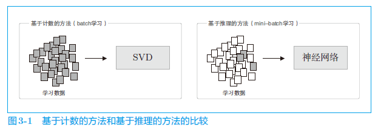

正文
3.1 基于推理的方法和神经网络
向量表示单词的研究：
两者在获得单词含义的方法上差别很大，但两者的背景都是分布式假设。
3.1.1 基于计数的方法的问题
对于一个 n × n n\times n n × n O ( n 3 ) O(n^3) O ( n 3 ) n n n

3.1.2 基于推理的方法的概要
基于推理的方法的主要操作是“推理”。当给出周围的单词（上下文）时，预测“？”处会出现什么单词，这就是推理。
3.1.3 神经网络中的单词的处理方法
我们将使用神经网络来处理单词。但是，神经网络无法直接处理 you 或 say 这样的单词，要用神经网络处理单词，需要先将单词转化为固定长度的向量。对此，一种方式是将单词转换为 one-hot 表示（one-hot 向量）。在 one-hot 表示中，只有一个元素是 1，其他元素都是 0。
1 2 3 4 5 6 import numpy as np1 , 0 , 0 , 0 , 0 , 0 , 0 ]]) 7 , 3 ) print (h)
[[-0.7200455 -0.12248471 -0.19002763]]
3.2 简单的 word2vec
使用由原版 word2vec 提出的名为 **continuous bag-of-words（CBOW）**的模型作为神经网络。
3.2.1 CBOW 模型的推理
中间层的神经元是各个输入层经全连接层变换后得到的值的“平均”。
经全连接层变换后，第 1 个输入层转化为 h 1 h_1 h 1 h 2 h_2 h 2 1 2 ( h 1 + h 2 ) \frac{1}{2}(h_1+h_2) 2 1 ( h 1 + h 2 )
从输入层到中间层的变换由全连接层（权重是 W i n W_{in} W i n W i n W_{in} W i n 7 × 3 7\times 3 7 × 3
1 2 3 4 5 6 7 8 9 10 11 12 13 14 15 16 17 18 19 20 21 22 23 24 25 import sys'..' )import numpy as npfrom common.layers import MatMul1 , 0 , 0 , 0 , 0 , 0 , 0 ]])0 , 0 , 1 , 0 , 0 , 0 , 0 ]])7 , 3 )3 , 7 )0.5 * (h0 + h1)print (s)
[[-1.6202109 0.75824908 -0.05364709 -0.39814822 -0.37373042 0.51207421
0.8510953 ]]
CBOW 模型是没有使用激活函数的简单的网络结构。
3.2.2 CBOW 模型的学习
上下文是 you 和 goodbye，正确解标签（神经网络应该预测出的单词）是 say。这时，如果网络具有“良好的权重”，那么在表示概率的神经元中，对应正确解的神经元的得分应该更高。
CBOW 模型的学习就是调整权重，以使预测准确。其结果是，权重 W i n W_{in} W i n W i n W_{in} W i n W o u t W_{out} W o u t
对其进行学习只是使用一下 Softmax 函数和交叉熵误差。首先，使用 Softmax 函数将得分转化为概率，再求这些概率和监督标签之间的交叉熵误差，并将其作为损失进行学习。
3.2.3 word2vec 的权重和分布式表示
word2vec 中使用的网络有两个权重，分别是输入侧的全连接层的权重（W i n W_{in} W i n W o u t W_{out} W o u t
一般而言，输入侧的权重 W i n W_{in} W i n W o u t W_{out} W o u t
3.3 学习数据的准备
3.3.1 上下文和目标词
word2vec 中使用的神经网络的输入是上下文，它的正确解标签是被这些上下文包围在中间的单词，即目标词。
将语料库中的目标单词作为目标词，将其周围的单词作为上下文提取出来。我们对语料库中的所有单词都执行该操作（两端的单词除外），可以得到 contexts（上下文）和 target（目标词）。
将语料库的文本转换成单词 ID
1 2 3 4 5 6 7 8 import sys'..' )from common.util import preprocess'You say goodbye and I say hello.' print (corpus)print (id_to_word)
[0 1 2 3 4 1 5 6]
{0: 'you', 1: 'say', 2: 'goodbye', 3: 'and', 4: 'i', 5: 'hello', 6: '.'}
实现生成上下文和目标词的函数
1 2 3 4 5 6 7 8 9 10 11 12 13 14 15 16 17 18 19 20 21 22 def create_contexts_target (corpus, window_size=1 ):""" corpus: 单词 ID 列表 window_size: 上下文的窗口大小 return: NumPy 多维数组格式的上下文和目标词 """ """ contexts 是二维数组。此时，contexts 的第 0 维保存的是各个上下文数据。 具体来说，contexts[0] 保存的是第 0 个上下文，context[1] 保存的是第 1 个上下文。 """ for idx in range (window_size, len (corpus)-window_size):for t in range (-window_size, window_size + 1 ):if t == 0 :continue return np.array(contexts), np.array(target)
1 2 3 contexts, target = create_contexts_target(corpus, window_size=1 )print (contexts)
[[0 2]
[1 3]
[2 4]
[3 1]
[4 5]
[1 6]]
这样就从语料库生成了上下文和目标词，后面只需将它们赋给 CBOW 模型即可。不过，因为这些上下文和目标词的元素还是单词 ID，所以还需
要将它们转化为 one-hot 表示。
3.3.2 转换为 one-hot 表示
1 2 3 4 5 6 7 8 9 10 11 12 13 import sys'..' )from common.util import preprocess, create_contexts_target, convert_one_hot'You say goodbye and I say hello.' 1 )len (word_to_id)
3.4 CBOW 模型的实现
1 2 3 4 5 6 7 8 9 10 11 12 13 14 15 16 17 18 19 20 21 22 23 24 25 26 27 28 29 30 31 32 33 34 35 36 37 38 39 40 41 42 43 44 45 46 47 48 49 50 51 52 53 54 55 56 57 import sys'..' )import numpy as npfrom common.layers import MatMul, SoftmaxWithLossclass SimpleCBOW : def __init__ (self, vocab_size, hidden_size ):""" vocab_size: 词汇个数 hidden_size: 中间层的神经元个数 """ 0.01 * np.random.randn(V, H).astype('f' ) 0.01 * np.random.randn(H, V).astype('f' )self .in_layer0 = MatMul(W_in)self .in_layer1 = MatMul(W_in)self .out_layer = MatMul(W_out)self .loss_layer = SoftmaxWithLoss()self .in_layer0, self .in_layer1, self .out_layer]self .params, self .grads = [], []for layer in layers:self .params += layer.paramsself .grads += layer.gradsself .word_vecs = W_indef forward (self, contexts, target ):""" 神经网络的正向传播 forward() 函数。 这个函数接收参数 contexts 和 target，并返回损失（loss）。 """ self .in_layer0.forward(contexts[:, 0 ])self .in_layer1.forward(contexts[:, 1 ])0.5 self .out_layer.forward(h)self .loss_layer.forward(score, target)return lossdef backward (self, dout=1 ):""" 反向传播 """ self .loss_layer.backward(dout)self .out_layer.backward(ds)0.5 self .in_layer1.backward(da)self .in_layer0.backward(da)return None
学习的实现
CBOW 模型的学习和一般的神经网络的学习完全相同。首先，给神经网络准备好学习数据。然后，求梯度，并逐步更新权重参数。
1 2 3 4 5 6 7 8 9 10 11 12 13 14 15 16 17 18 19 20 21 22 23 24 import sys'..' )from common.trainer import Trainerfrom common.optimizer import Adamfrom common.util import preprocess, create_contexts_target, convert_one_hot1 5 3 1000 'You say goodbye and I say hello.' len (word_to_id)
查看学习后的权重参数
1 2 3 word_vecs = model.word_vecsfor word_id, word in id_to_word.items():print (word, word_vecs[word_id])
you [-0.9274265 -0.91214865 -0.9109259 0.8992449 -1.6783223 ]
say [ 1.1131934 1.0601219 1.1271317 -1.1453978 -1.2170266]
goodbye [-0.9434733 -0.9451493 -1.0034578 1.0183493 0.01961206]
and [ 0.68801135 1.3125733 0.7976222 -0.66661966 -1.7473713 ]
i [-0.9705925 -0.96961325 -1.0059276 1.0296363 0.02202316]
hello [-0.9177436 -0.9189522 -0.90853983 0.89148486 -1.6829524 ]
. [ 1.2674404 0.2086714 1.1918164 -1.3567644 0.25613624]
这里使用的小型语料库并没有给出很好的结果。当然，主要原因是语料库太小了。如果换成更大、更实用的语料库，相信会获得更好的结果。但是，这样在处理速度方面又会出现新的问题，这是因为当前这个 CBOW 模型的实现在处理效率方面存在几个问题。
3.5 word2vec 的补充说明
3.5.1 CBOW 模型和概率
给定上下文 w_{t−1} 和 w t + 1 w_{t+1} w t + 1 w t w_t w t
P ( w t ∣ w t − 1 , w t + 1 ) P(w_t|w_{t-1},w_{t+1})
P ( w t ∣ w t − 1 , w t + 1 )
CBOW 模型的损失函数只是对上式的概率取 log \log log 负对数似然（negative log likelihood） 。
L = − log P ( w t ∣ w t − 1 , w t + 1 ) L=-\log P(w_t|w_{t-1}, w_{t+1})
L = − log P ( w t ∣ w t − 1 , w t + 1 )
上式是一笔样本数据的损失函数。如果将其扩展到整个语料库：
L = − 1 T ∑ t = 1 T log P ( w t ∣ w t − 1 , w t + 1 ) L=-\frac{1}{T}\sum^T_{t=1}\log P(w_t|w_{t-1}, w_{t+1})
L = − T 1 t = 1 ∑ T log P ( w t ∣ w t − 1 , w t + 1 )
3.5.2skip-gram 模型
skip-gram 是反转了 CBOW 模型处理的上下文和目标词的模型。
skip-gram 可以建模为：
P ( w t − 1 , w t + 1 ∣ w t ) P(w_{t-1}, w_{t+1}|w_t)
P ( w t − 1 , w t + 1 ∣ w t )
“当给定 w t w_t w t w t + 1 w_{t+1} w t + 1
P ( w t − 1 , w t + 1 ∣ w t ) = P ( w t − 1 ∣ w t ) P ( w t + 1 ∣ w t ) P(w_{t-1},w_{t+1}|w_t)=P(w_{t-1}|w_t)P(w_{t+1}|w_t)
P ( w t − 1 , w t + 1 ∣ w t ) = P ( w t − 1 ∣ w t ) P ( w t + 1 ∣ w t )
带入交叉熵损失函数，推导出 skip-gram 模型的损失函数：
L = − 1 T ∑ t = 1 T ( log P ( w t − 1 ∣ w t ) + log P ( w t + 1 ∣ w t ) ) L=-\frac{1}{T}\sum^T_{t=1}(\log P(w_{t-1}|w_t) + \log P(w_{t+1}|w_t))
L = − T 1 t = 1 ∑ T ( log P ( w t − 1 ∣ w t ) + log P ( w t + 1 ∣ w t ) )
3.5.3 基于计数于基于推理
在 word2vec 之后，有研究人员提出了 GloVe 方法。GloVe 方法融合了基于推理的方法和基于计数的方法。该方法的思想是，将整个语料库的统计数据的信息纳入损失函数，进行 mini-batch 学习（具体请参考论文）。据此，这两个方法论成功地被融合在了一起。
3.6 小结
基于推理的方法以预测为目标，同时获得了作为副产物的单词的分布式表示
word2vec 是基于推理的方法，由简单的 2 层神经网络构成
word2vec 有 skip-gram 模型和 CBOW 模型
CBOW 模型从多个单词（上下文）预测 1 个单词（目标词）
skip-gram 模型反过来从 1 个单词（目标词）预测多个单词（上下文）
由于 word2vec 可以进行权重的增量学习，所以能够高效地更新或添加单词的分布式表示